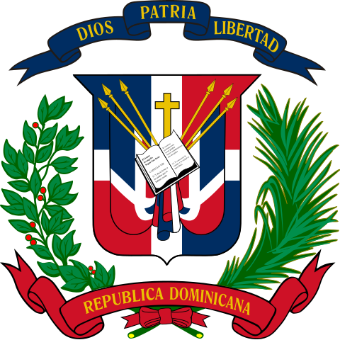
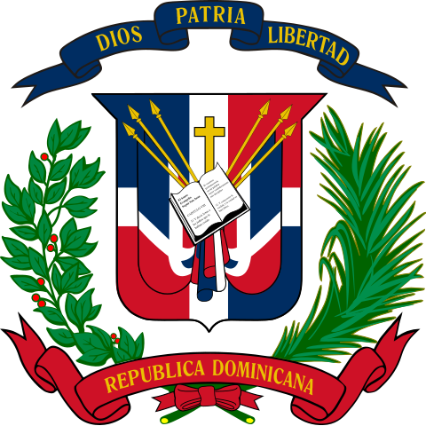

5-31-2025:"it's almost june
one week of school left and then i'm leaving
time has gone very fast, and i very much like that"
about
Describe yourself (100 char. limit) "a person"
i'm xleepree
my name is diego and i do stuff:
- existing
- going to public school
- coding
- playing videogames like terraria, subnautica, roblox, etc.
- other things that people do
i'm intrested in creative writing, astronomy/sciences in general, and coding (note: i wanted to be an astronaut at one point)
for examples, i've written like 20 chapter stories only to abandon them because i thought they weren't good enough,
watch or read scientific videos and articles every single day and have been for years,
and i'm in the process of learning to code (hint: check my projects)
my family is from the dominican republic and immigrated to the US
i was born in the US but my parents and my sister were not so i'm dominican
me and my sister get a better education in result of being in this country
we go back to DR for vacations now
in case you're wondering where i am in programming, i know:
- html
- css
- javascript
- python: it's basically english. idk what to use it for tho
- a bit about C-like languages
- astro, kind of? (haven't used it for anything except like one thing i'm working on)
trying to focus on javascript because of shiny object syndrome
turns out trying to learn more than one language at once to "expand your knowledge" is hard and overall does not give you progress
in the end you would just perform poorly in each language
so instead what i'm doing is focusing on javascript to learn essential concepts so i can learn other langauges easier
anyway yeah
that's me i guess
 

youtube github discord